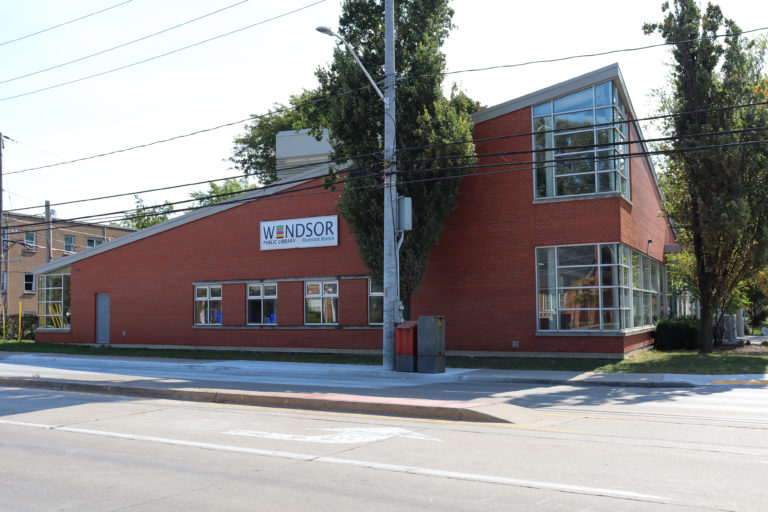

Address
6305 Wyandotte St E, Windsor, Ontario N8S 1N4

Image Source: Windsor Public Library (Public Domain)
About Riverside Library
Riverside Library is one of Windsor’s most active library branches, serving as both a learning hub and a cultural gathering space for the east-end community. Recently renovated, the branch offers modern facilities including computer labs, quiet study areas, and dedicated spaces for children and teens.
Its large windows and open-concept design create a welcome and inviting environment perfect for reading, research, or community interaction. The Riverside branch regularly hosts educational workshops, book clubs, and special events celebrating local authors and artists.
As part of the Windsor Public Library system, Riverside Library provides access to thousands of print and digital materials, along with e-books and streaming resources. Whether you’re exploring Windsor’s history, studying for school, or attending a family event, Riverside Library embodies the spirit of connection and learning that defines the city’s commitment to its residents.